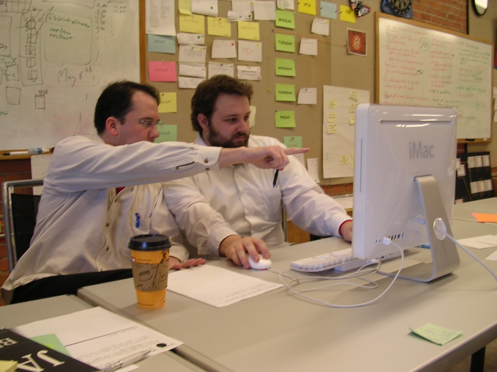
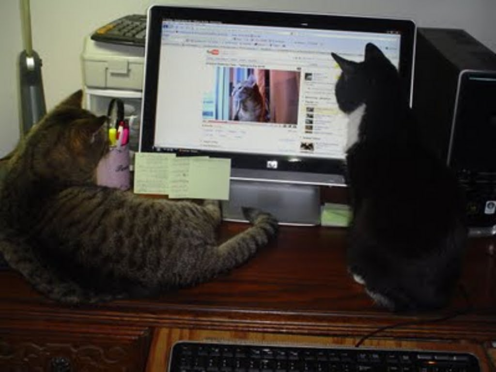

About me
Jorge Dias
- Venezuelan
The women
The president
Computer Engineer Universidad Simón Bolivar
More
- Ruby enthusiast since 2007
- Emacs junkie
- Blog: http://mrdias.com
- Code: https://github.com/diasjorge
- Twitter: @dias_jorge
Programming
What is it?
Programming
Programming is the art of telling another human being what one wants the computer to do
Donald Knuth
Pair Programming
What is it?
- Pair programming is a method of programming in which two people work together on the design, coding and/or testing of a software application
The roles
- The driver
- The navigator
Working setups
2 on 1
The usual
- One monitor
- One mouse
- One keyboard


2 on 1.5
The hashrocket way
- One monitor
- Two mice
- Two keyboards
2 on 2
Together yes but not coupled
- Two computers
- The main computer
- The auxiliary computer
Remote pairing
- Two computers
- Shared screen technologies (Tmux/Screen, YuuGuu)
- Audio communication (Skype)
- Chat
Do's and Dont's
How to make it work
DO
- Give it an honest shot
- Communicate. Talk to your partner
- Communicate. Listen to your partner
- Switch Roles
- Leave your ego at home
- Be patient. Explain yourself. Try to understand
- Be respectful
- Trust your partner
- Everyone has something to offer
- Take breaks
- Be clean
DON'T
- Boss people around
- Be afraid
- Be quiet
Pros and Cons
Pros
Tell me all the benefits!
- Increased focus
- Better code
- Fewer interruptions
- Learn new tricks
- Collective code ownership
- Knowledge transfer
- Team cohesion
- More fun
Cons
Nothing is perfect
- Odd number of members
- Studying and documenting
- Rapid prototyping
- It's not mentoring
Conclusions
Remember